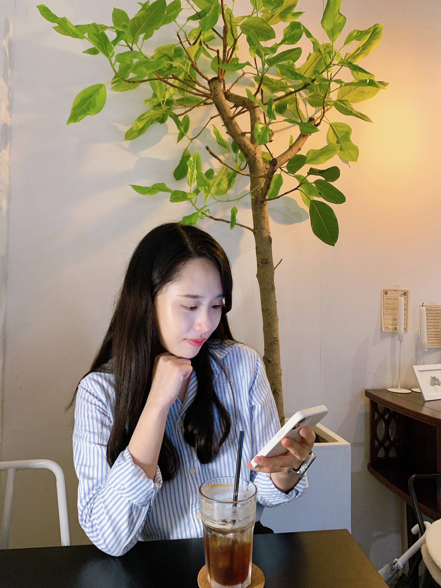
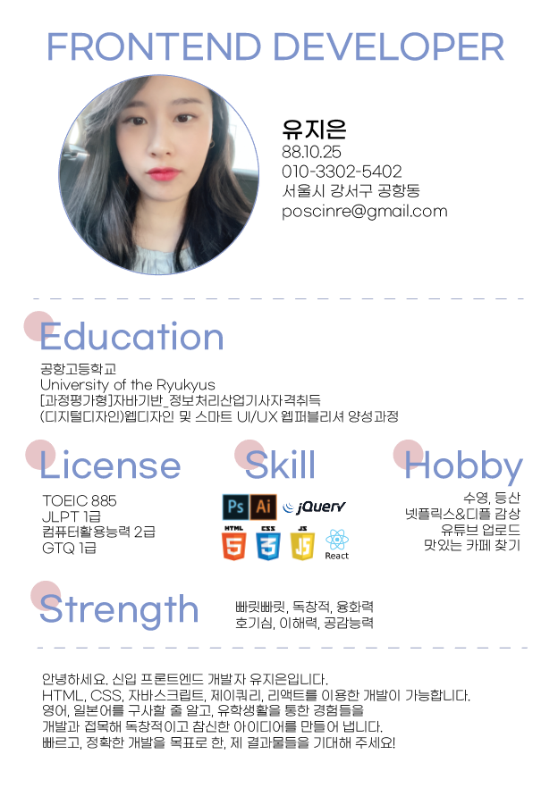
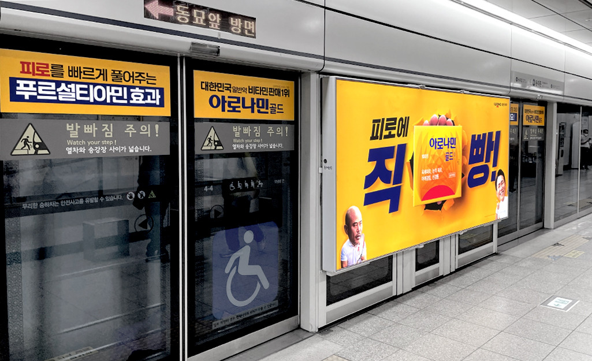
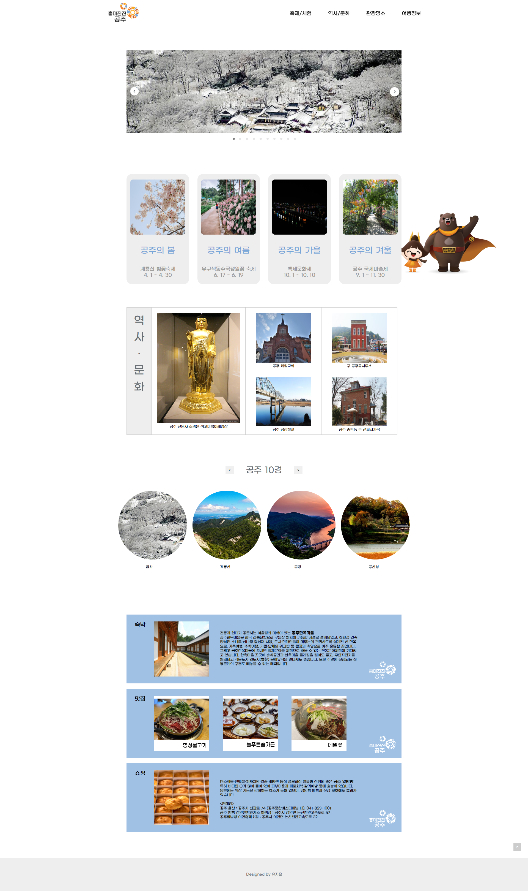
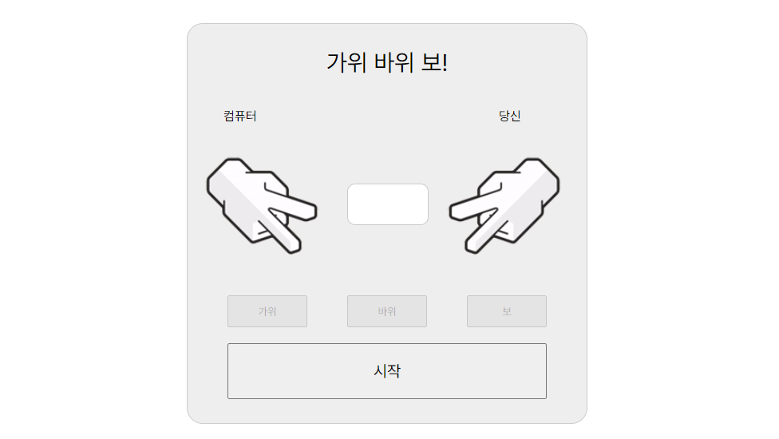

- Name : 유지은
- Birth : 1988. 10. 25
- Adress : 서울시 강서구 공항동
- Phone : 010-3302-5402
- Email : poscinre@gmail.com
로딩중
모험을 즐기는 용감한 프론트엔드 개발자 유지은 입니다.
기본에 충실한 개발을 위해 노력하고 있습니다.
스크롤바를 내리면 작품을 감상할 수 있습니다.
퍼블리셔로써 어떤 업무를 맡더라도 팀에 도움이 되는 존재가 되고싶습니다.
HTML과 CSS를 깔끔하게 다루면서 트렌드의 변화속도를 따라가는 퍼블리셔가 되는 것이 저의 목표입니다.
한번도 생각해보지 못했던 웹디자인 분야로 도전하게 된 계기는 매우 사소했습니다.
디자인을 보고 있었을 뿐인데 감동을 받았고, 저또한 그러한 사람이 되고 싶다는 생각을 하게 된것입니다.
끝없이 탐구하고 창의적으로 이끄는 사람이 되겠습니다.
'스타일을 창조하여 그것을 섬세한 디자인으로 탈바꿈 시키고싶다' 는 마음으로 매일 노력하고 있습니다.
HTML5 & CSS3 시멘틱 페이지를 ZenCoding(EMMET), SCSS로 코딩할 수 있습니다.
클라이언트의 요구사항을 적극적으로 반영하는 UI/UX 디자인 능력은 저의 최고의 장점 중 하나입니다.
JS 플러그인을 사용에 그치지 않고 필요한 기능을 직접 구현할 수 있는 Javascript/jQuery 로직구현이 가능합니다.
새로운 코딩기법과 디자인을 배우는 것이 정말 즐겁습니다.
고민이 많을 때 가장 먼저 상담을 하는 친구입니다. 저의 일들을 본인의 일인 듯 나서서 해결책을 제시해주고, 항상 잘 들어줍니다. 언제든 기댈 수 있는 친구입니다.
약속 시간에 한번도 늦은 적 없는 친구입니다. 그만큼 사소한 것도 소중히 여길 줄 아는 사람이고, 사람과 사람과의 관계를 존중하는 친구라고 생각합니다.
어렸을 때부터 여행도 많이 다니고, 많은 경험을해서 그런지 포용력이 넓고 이해심이 많습니다. 넓은 시야를 가지고 다양한 의견을 낼 줄 아는 친구입니다.
사용자의 Context와 Needs를 파악하고
Problem을 해결할 수 있는 Insight 도출
시멘틱을 지향하는 HTML/CSS 작성능력 보유,
자바스크립트와 제이쿼리 기반의 로직 구현 가능
협업 웹코딩의 필수 기술인 SCSS를 이용한
CSS 스타일링을 원활이 사용할 수 있습니다.
국내 프론트엔드 시장의 대세 리액트 코드구현,
자바스크립트와 제이쿼리 기반의 로직구현 가능
‘스타일을 창조하여 그것을 섬세한 디자인으로 탈바꿈 시키고싶다’ 는 마음으로
매일 노력하고 있습니다.
HTML5 & CSS3 시멘틱 페이지를 ZenCoding(EMMET)으로 코딩할 수 있습니다.
클라이언트의 요구사항을 적극적으로 반영하는 UI/UX 디자인 능력은 저의 최고의
장점중 하나입니다.
JS 플러그인을 사용에 그치지 않고 필요한 기능을 직접 구현할 수 있는 Javascript/jQuery 로직구현이 가능합니다.
새로운 코딩기법과 디자인을 배우는 것이 정말 즐겁습니다.

사용자가 어떤 제품, 시스템, 서비스 등을 직접적 혹은 간접적으로 이용하면서 느끼는 반응과
같은 경험을 총체적으로 설계하는 것이 UX 라고 생각한다.
사용자가 겪을 경험 중심적인 관점에서 구성하고 설계하는 것, 이와 비슷한 것이 바로 UX 이며,
모바일 앱, 사이트, 제품 등을 디자인할 때 콘텐츠와 각각의 요소들을 연구하여 구축하여야 한다.
사용자의 만족감을 향상하고 사용성을 한결 손쉽게 만들려고 항상 시도해야 한다.
사람들이 제품을 어떤 방식으로 사용하고 소통하는지 깊이 있는 이해가 필요하다.

Les Basic 쇼핑몰 사이트 창작
React로 작업한 쇼핑몰 사이트
기존 사이트는 참고하지 않고 창작하였습니다.
상품을 눌러 장바구니에 추가할 수 있습니다
작업프로그램 : Visual Studio Code
작업기여도 : 100% 개인 작업


React로 작업한 넷플릭스
Firebase를 통해 백엔드 구현, 가입 및 로그인 가능
API를 받아와서 영상을 배치하였습니다
누르면 예고편 영상을 시청할 수 있습니다.
작업프로그램 : Visual Studio Code
작업기여도 : 100% 개인 작업


Gongju Site Design
공주의 대표적인 문화를 소개하는 원페이지 사이트를 제작하였습니다.
슬라이드로 공주의 풍경을 감상할 수 있습니다
작업프로그램 : Photoshop, Illustrator, Visual Studio Code
작업기여도 : 100% 개인 작업

가위바위보 게임
자바스크립트로 만든 가위바위보 게임입니다.
작업프로그램 : Photoshop, Visual Studio Code
작업기여도 : 100% 개인 작업

‘스타일을 창조하여 그것을 섬세한 디자인으로 탈바꿈 시키고싶다’ 는 마음으로 매일 노력하고 있습니다.
HTML5 & CSS3 시멘틱 페이지를 SCSS, ZenCoding(EMMET)으로 작성할 수 있습니다.
클라이언트의 요구사항을 적극적으로 반영하는 UI/UX 디자인 능력은 저의 최고의 장점중 하나입니다.
JS 플러그인을 사용에 그치지 않고 필요한 기능을 직접 구현할 수 있는 Javascript/jQuery 로직구현이 가능합니다.
새로운 코딩기법과 디자인을 배우는 것이 정말 즐겁습니다.
페이지 전체의 계층구조를 입체적으로 분석할 수 있는
실무형 코딩기법 Emmet을 사용할 수 있어 업무시간을 단축시킬 수 있을뿐 아니라,
유지보수도 더욱 쉽고 정확하게 처리할 수 있습니다.
SCSS의 가장 큰 장점인 변수와 Mixin 기능을 적극 활용하여
CSS 스타일링을 할 수 있습니다.
Sprite-Image와 IR(Image Replacement)기법에 능숙
id, class를 남발하지 않고 원하는 요소를 셀렉팅할 수 있는 능력,
CSS3 Transform, Transition, Keyframes을 이용한 애니메이션 효과 구현
슬라이드 구현에 적합한 ul,li,a 태그와 flxe를 사용하여 UI를 구현하였습니다.
또한 자바스크립트로 position의 lef값을 동적으로 변화시켜 이동하도록 하였습니다.
플러그인 없이 직접 구현하였습니다.

이전, 다음 기능을 가진 업그레이드 된 슬라이드로서 사용자 편의성을 향상되었습니다. 제이쿼리의 fadeIn(), fadeOut() API를 이용하여 코드를 구현하였습니다. 플러그인 없이 직접 구현하였습니다.
슬라이드 보기

시작, 정지기능이 장착된 슬라이드로서 일관성있게 한쪽 방향에서 다음 슬라이드가 노출되는 기능을 append() API와 콜백함수의 개념을 접목하여 구현하였습니다. 플러그인 없이 직접 구현하였습니다.
슬라이드 보기
저의 웹퍼블리싱 이야기 입니다.
질문을 선택하시면 정리된 답변을 보실수 있습니다.
더욱 궁금하신 점은 면접시 말씀드리겠습니다. 감사합니다~!
본 페이지는 저의 개인 포트폴리오용으로 제작되었으며, 상업적인 목적과 관련이 없음을 알려드립니다.